Extraterrestrial Exosphere and Surface Simulation
Coupled H, H2, OH, and H2O lunar exosphere simulation framework

About Me
M.Sc. Alexander Smolka
Professorship of Lunar and Planetary Exploration Technologies
TUM School of Engineering and Design
Technical University of Munich
Education
- B.Sc. Mechanical Engineering, RWTH Aachen University
- M.Sc. Aerospace, Technical University of Munich (TUM)
Doctorate
- Research Assistant at the Professorship of Lunar and Planetary Exploration Technologies, TUM
- Research Topic: Investigation of Surface-Bounded Exospheres and their Surface Interaction

About the Presentation
The Lunar Exosphere Simulation Framework
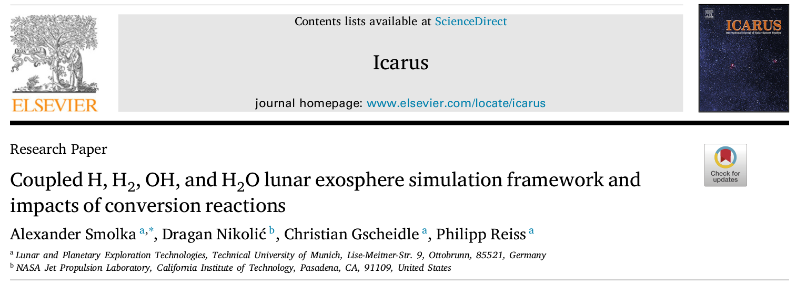
About the Presentation
The Lunar Exosphere Simulation Framework
Highlights
- Monte-Carlo simulation
- Implementation in Julia Language
- Stationary 2D model
- Neutral exosphere of \(\ce{H}\), \(\ce{H2}\), \(\ce{OH}\), and \(\ce{H2O}\)
- Solar wind is the only source of hydrogen atoms
- Conversion reactions to connect the different species
- All relevant processes included as distributions
Goal of the Research
Build a framework to show the general influence of conversion reactions on the lunar hydrogen exosphere. Include uncertain pathways for particles with probability distributions.
Not predict the exact density of the lunar exosphere!
The Model Framework
Numerical Grid – 2D Quasi-Stationary
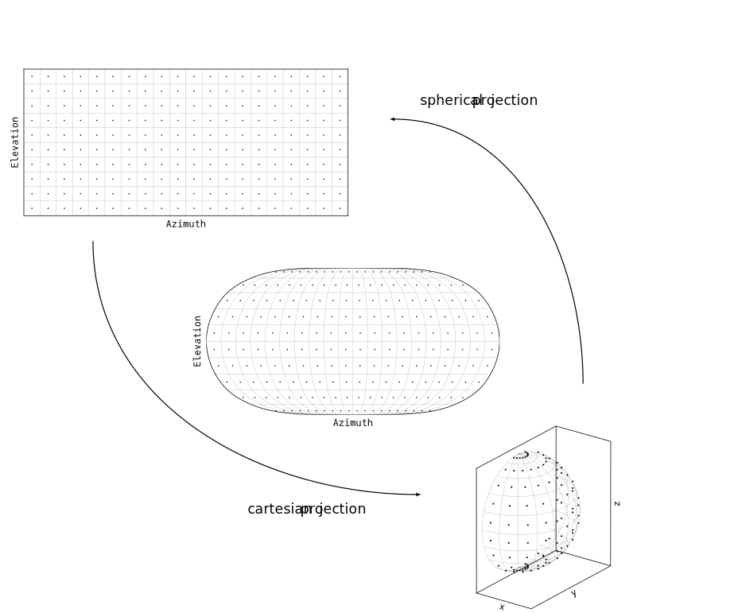
Structured, Two-Dimensional, Surface Grid
The grid assumes a perfectly spherical Moon. Its coordinates are given in a sub-solar coordinate system with \(\left(0,0\right)\) at the sub-solar point, at noon \(12\text{h}\) local time.
easy to set up
easy to interpolate on
analytic solution to mapping a continuous point to its discrete grid element
element “clumping” at the poles
changing element size with latitude
The Model Framework
Lunar Surface Temperatures
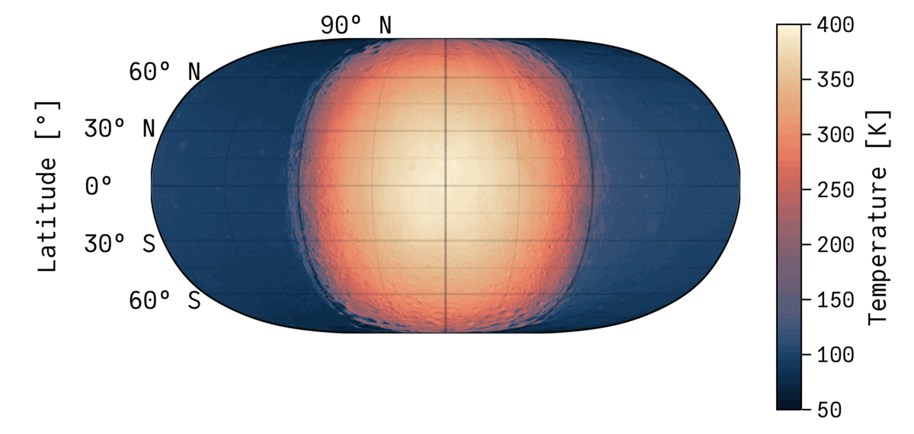
- Subsolar (local time) coordinate system, Diviner measurements averaged.
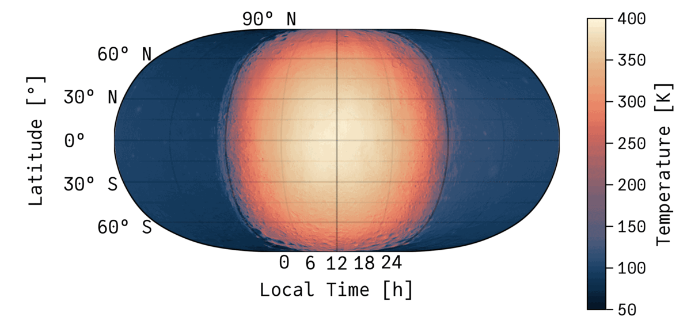
- Subsolar (local time) coordinate system, analytic temperature model by Hurley et al. (2015).
The Model Framework
Velocity Distributions
Maxwell-Boltzmann Distribution (MBD)

Maxwell-Boltzmann Flux Distribution (MBFD)

This study exclusively used the MBFD.
The Model Framework
Adsorption & Residence Time
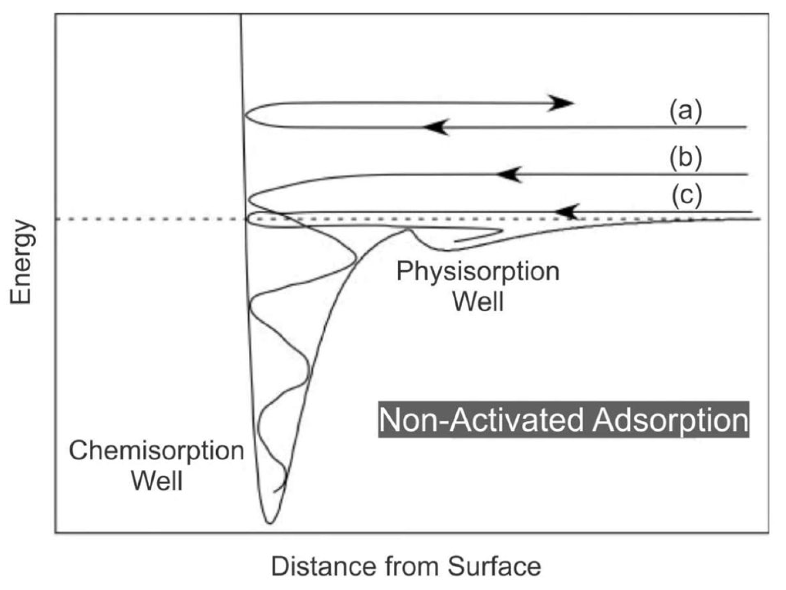
- from Teolis et al. (2023)
- particles are thermally (first order) adsorbed to the surface
- residence time as statistical time-scale for desorption: \(\qquad\tau= \frac{h}{k_BT}\cdot\exp\left(\frac{E}{RT}\right)\)
- physisorption requires less energy than chemisorption
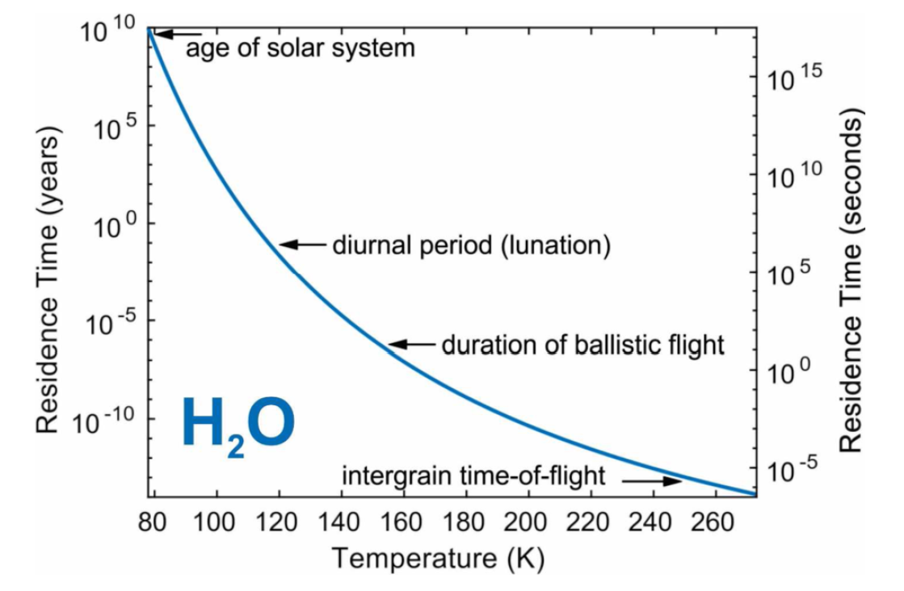
- \(E_{\ce{H}} = E_{\ce{H2}} = 0\) (Hodges et al., 1973)
- \(E_{\ce{OH}, min} = 6.75 \times 10^{4} \,\mathrm{J/mol}\), \(E_{\ce{OH}, max} = 11.58 \times 10^{4} \,\mathrm{J/mol}\)
- \(E_{\ce{H2O}, min} = 6.08 \times 10^{4} \,\mathrm{J/mol}\), \(E_{\ce{H2O}, max} = 8.68 \times 10^{4} \,\mathrm{J/mol}\)
- see Grumpe et al. (2019), Sarantos & Tsavachidis (2020), Reiss (2018)
The Model Framework
Conversions
- Multi-element simulation: \(\ce{H}\), \(\ce{H2}\), \(\ce{OH}\), and \(\ce{H2O}\)
- Assumption: Surface-bounded exosphere with particles not interacting with each other
- Dependencies between particles solely through conversion reactions
- Conversions can take place in the exosphere and on the surface
- exosphere: photodissociation of hydrogen-based molecules
- surface: physical/chemical reactions with the regolith and other volatiles
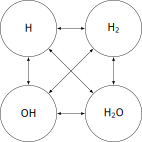
The Model Framework
Conversions – Photoionization and -dissociation
Rates by Huebner et al. (1992)
- Ionization removes particles from the simulation
- Dissociation converts particles into other exospheric species
Photoreactions of Adsorbate Species
The same base rates were used for the photoreactions of absorbed species, scaled with the cosine of the solar zenith angle: \[ k_{ads} = \begin{cases}\cos \psi\cdot k& \text{for: } \psi\leq \pi/2 \\ 0 & \text{else.}\end{cases}\]
Reaction |
Quiet Sun Photoreaction Rate in \(10^{-7}\) \(\,\mathrm{s^{\mathrm{-1}}}\) |
Active Sun Photoreaction Rate in \(10^{-7}\) \(\,\mathrm{s^{\mathrm{-1}}}\) |
|
|---|---|---|---|
| 1 | \(\ce{H +\nu -> H+ + e-}\) | \(0.726\) | \(1.720\) |
| 2 | \(\ce{H2 +\nu -> H(1s) +H(1s)}\) \(\ce{H2 +\nu -> H(1s) +H(2s \text{or} 2p)}\) \(\ce{H2 +\nu -> H2+ + e-}\) \(\ce{H2 +\nu -> H + H+ +e-}\) |
\(0.480\) \(0.344\) \(0.541\) \(0.095\) |
\(1.090\) \(0.821\) \(1.150\) \(0.279\) |
| 17 | \(\ce{OH +\nu -> O(3p) + H}\) \(\ce{OH +\nu -> O(1d) + H}\) \(\ce{OH +\nu -> O(1s) + H}\) \(\ce{OH +\nu -> OH+ + e-}\) |
\((120.00)\;65.400\) \((70.10)\;6.350\) \((8.33)\;0.671\) \((2.43)\;2.470\) |
\((138.00)\;71.700\) \((176.00)\;15.100\) \((21.10)\;1.640\) \((6.43)\;6.520\) |
| 18 | \(\ce{H2O +\nu -> OH + H}\) \(\ce{H2O +\nu -> H2 + O(1d)}\) \(\ce{H2O +\nu -> H + H + O}\) \(\ce{H2O +\nu -> H2O+ + e-}\) \(\ce{H2O +\nu -> H + OH+ + e-}\) \(\ce{H2O +\nu -> H2 + O+ + e-}\) \(\ce{H2O +\nu -> OH + H+ + e-}\) |
\(103.000\) \(5.970\) \(7.550\) \(3.310\) \(0.554\) \(0.059\) \(0.131\) |
\(176.000\) \(14.800\) \(19.100\) \(8.280\) \(1.510\) \(0.221\) \(0.407\) |
The Model Framework
Conversions – Surface Reactions
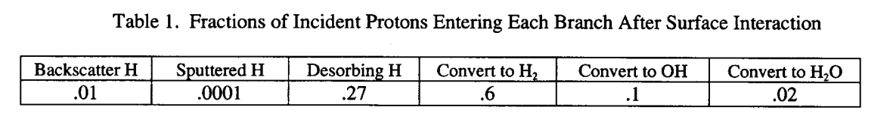
probabilities reported in Crider & Vondrak (2002)
assumption: the same probabilities are valid for neutral \(\ce{H}\), leading to
- \(\ce{H ->[60\%] H2}\): recombinative desorption of \(\ce{H}\) & \(\ce{OH}\)
- \(\ce{H ->[10\%] OH}\): proton implantation and atomic hydrogen diffusion
- \(\ce{H ->[2\%] H2O}\): recombinative desorption of \(\ce{OH}\)
- water reaction requires protons to first convert to hydroxyl, which happens at a 10% chance: \(\ce{OH ->[16\%] H2O}\)
- note that these probabilities are global values (no temperature/time/concentration/etc. dependence), with the authors highlighting their high uncertainties
- assumption: the ratio between the reported likelihoods is able to represent the proton/hydrogen interaction with the lunar surface at \(60:10:2\)
- reactivity fraction \(\xi\) is scaling these probabilities up/down
The Model Framework
Conversions – Surface Reactions
| \(\xi\) | \(\left(\ce{H}\right)\) | \(\ce{H2}\) | \(\ce{OH}\) | \(\ce{H2O}\) |
|---|---|---|---|---|
| \(25\%\) | \((75\%)\) | \(20.82\%\) | \(3.48\%\) | \(0.70\%\) |
| \(50\%\) | \((50\%)\) | \(41.65\%\) | \(6.95\%\) | \(1.40\%\) |
| \(75\%\) | \((25\%)\) | \(62.47\%\) | \(10.43\%\) | \(2.10\%\) |
| \(100\%\) | \((0\%)\) | \(83.30\%\) | \(13.90\%\) | \(2.80\%\) |
- assumption: the ratio between the reported likelihoods is able to represent the proton/hydrogen interaction with the lunar surface at \(60:10:2\)
- reactivity fraction \(\xi\) is scaling these probabilities up/down
Model Architecture
Nested-Loop Monte-Carlo Simulation
- Nested-Loop architecture
- Four loops in total:
- Loop IV: Monte-Carlo steps
- Loop III: Iterations
- converted particles as a source of other species in the next iteration
- Loop II: Grid elements
- weighted particle launches from each grid element based on the element size
- Loop I: Particles Trajectories
- tracking particle from source to loss/conversion
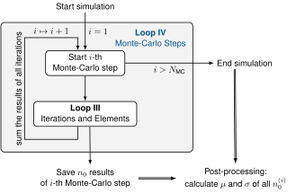
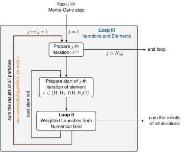
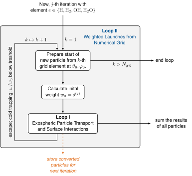
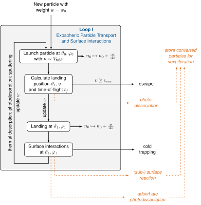
Results
Surface Number Density
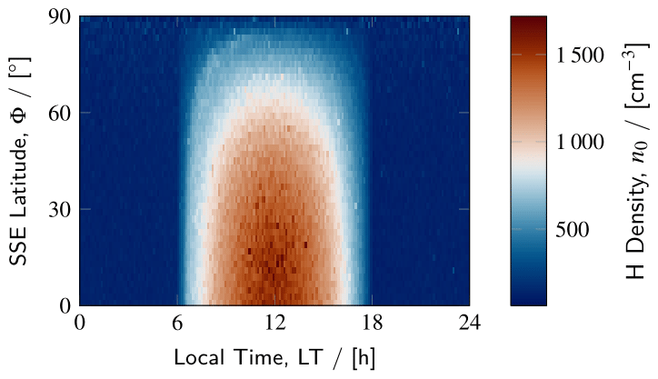
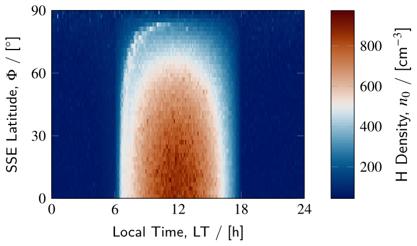
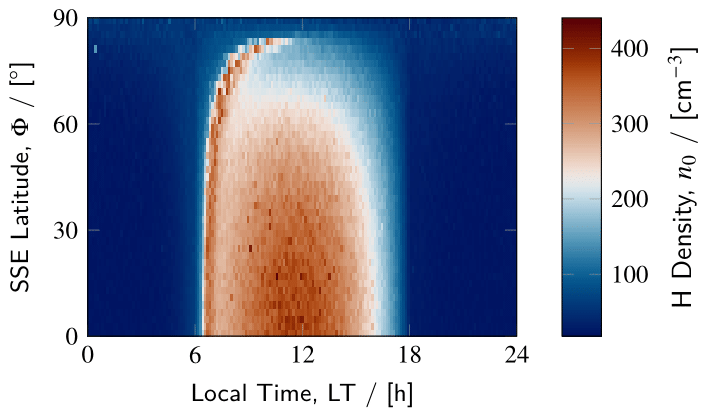
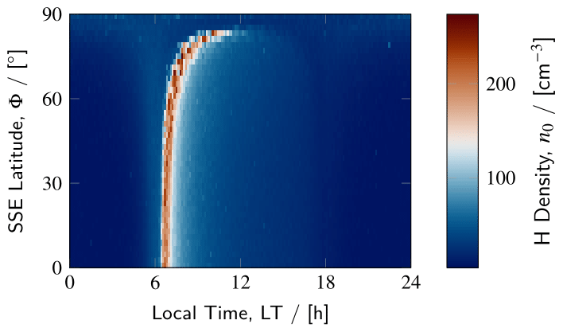
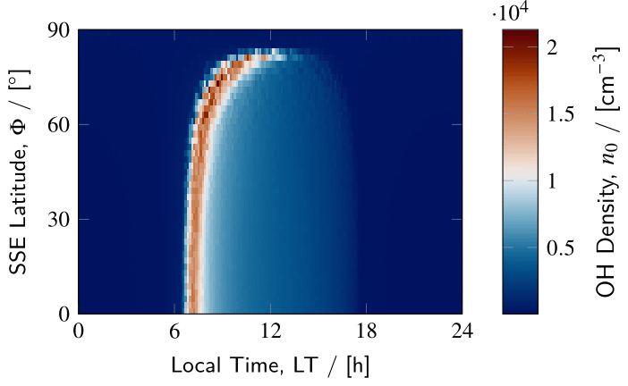
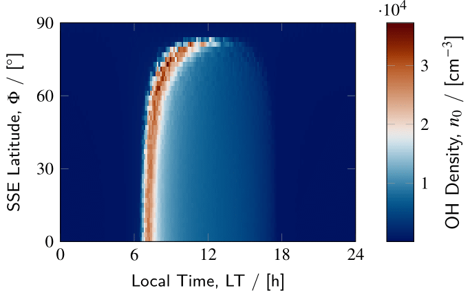
\(\xi = 25\%\)
\(\xi = 50\%\)
\(\xi = 75\%\)
\(\xi = 100\%\)
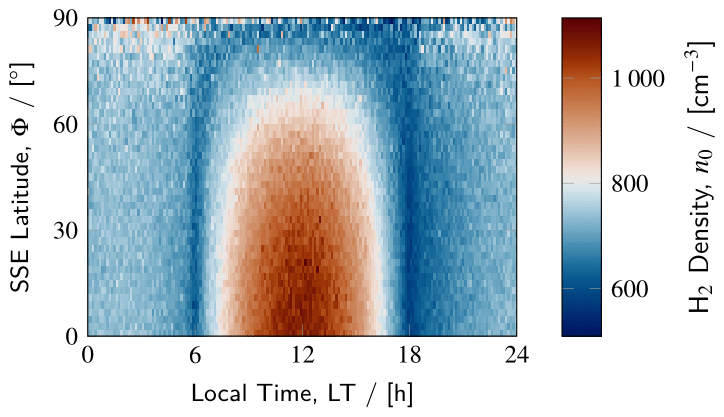
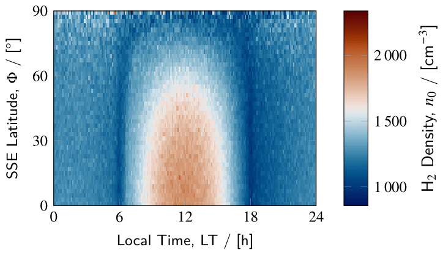
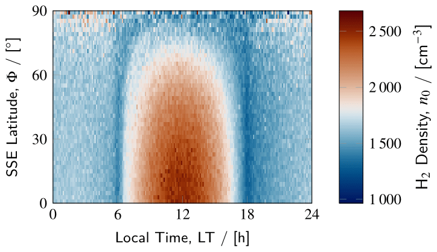
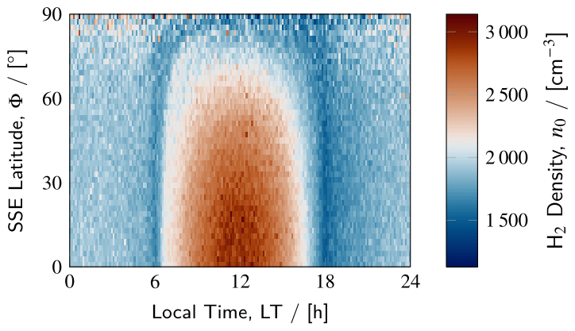
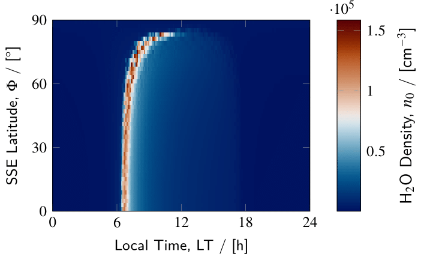
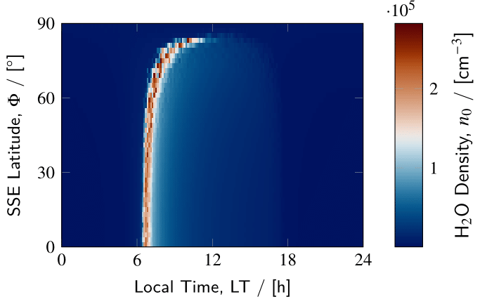
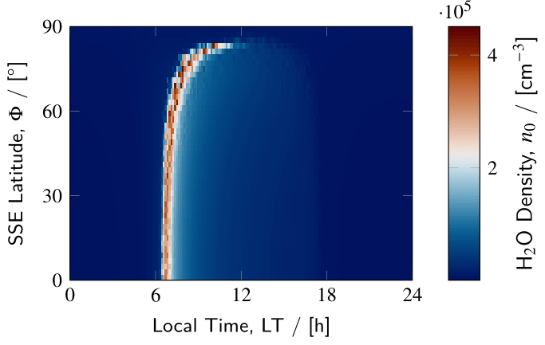
Results
Surface Number Density
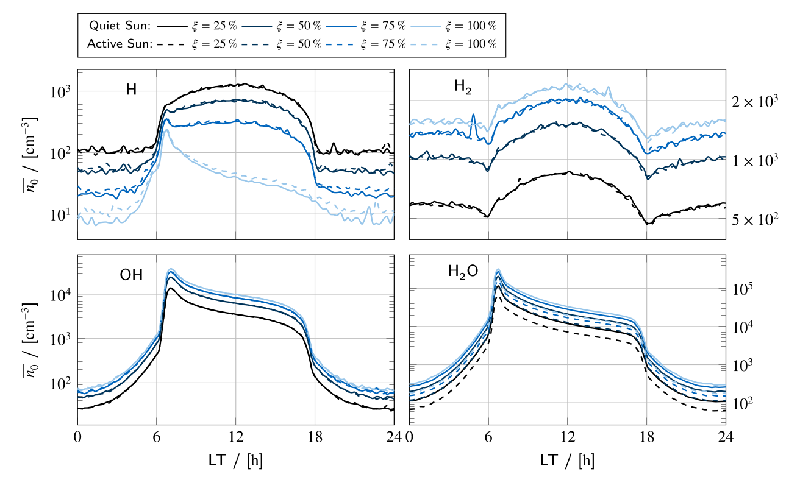
Results
Surface Number Density
Main Observations
- Increasing the reactivity \(\xi\) decreases \(\ce{H}\) densities, but increases \(\ce{H2}\), \(\ce{OH}\), and \(\ce{H2O}\) densities
- At low reactivities, \(\ce{H}\) and \(\ce{H2}\) are dominated by the influence of the solar wind on the day-side
- Both \(\ce{OH}\) and \(\ce{H2O}\) form a morning-terminator peak due to them adsorbing over night and desorbing in the morning
- With higher reactivities, the morning-terminator peak is also becoming visible in the \(\ce{H}\) densities
- \(\ce{H2}\) is also affected, but much less pronounced \(\rightarrow\) dawn-dusk asymmetry
Goal of the Research
Build a framework to show the general influence of conversion reactions on the lunar hydrogen exosphere. Include uncertain pathways for particles with probability distributions.
Not predict the exact density of the lunar exosphere!
What Next?
Conversion Map
- main drawback: bad surface model
- improve on conversion reactions
- introduce parametric rates instead of fixes probabilities
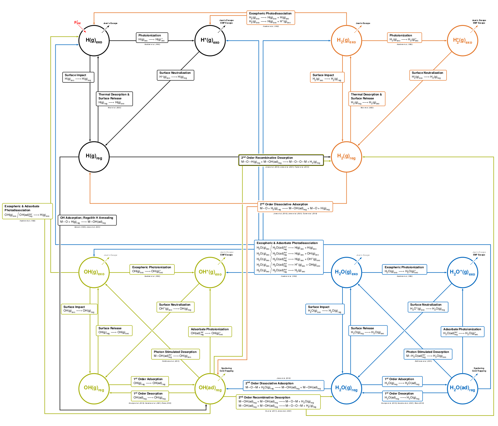
Summary
The Lunar Exosphere Simulation Framework
Highlights
- Monte-Carlo simulation
- Implementation in Julia Language
- Stationary 2D model
- Neutral exosphere of \(\ce{H}\), \(\ce{H2}\), \(\ce{OH}\), and \(\ce{H2O}\)
- Solar wind is the only source of hydrogen atoms
- Conversion reactions to connect the different species
- All relevant processes included as distributions
Goal of the Research
Build a framework to show the general influence of conversion reactions on the lunar hydrogen exosphere. Include uncertain pathways for particles with probability distributions.
Not predict the exact density of the lunar exosphere!
References
Backup Slides
The Lunar Exosphere Simulation Framework – Why Julia

Personal Reasons for Julia:
- Similar to Matlab and Python (easy to learn)
- Great community in the scientific computing field
- especially great ODE solvers
- Open-source & easy to get started
- Great for teaching

Performance and Productivity:
- Julia designed for high-performance computing.
- JIT compilation for near-native speed.
Versatility and Flexibility:
- Handles simulations, machine learning, and data visualization.
- Extensive libraries available.
Backup Slides
The Lunar Exosphere Simulation Framework – Why Julia
function lunar_surface_temperatures_HURLEY2015(lng::Real, lat::Real)
if abs(lng) >= pi/2
a = [444.738, -448.937, 239.668, -63.8844, 8.34064, -0.423502]
if lng < 0; lng += 2pi; end
colat = -(lat - pi/2)
return sum([a[i] * lng^(i-1) for i in 1:6]) + 35 * (sin(colat)-1)
end
return 262*(cos(lng) * cos(lat))^(1/2) + 130
endBackup Slides
The Lunar Exosphere Simulation Framework – Why Julia
function lunar_surface_temperatures_HURLEY2015(lng::Real, lat::Real)
if abs(lng) >= pi/2
a = [444.738, -448.937, 239.668, -63.8844, 8.34064, -0.423502]
if lng < 0; lng += 2pi; end
colat = -(lat - pi/2)
return sum([a[i] * lng^(i-1) for i in 1:6]) + 35 * (sin(colat)-1)
end
return 262*(cos(lng) * cos(lat))^(1/2) + 130
end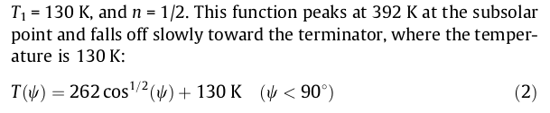
Backup Slides
The Lunar Exosphere Simulation Framework – Why Julia
function lunar_surface_temperatures_HURLEY2015(lng::Real, lat::Real)
if abs(lng) >= pi/2
a = [444.738, -448.937, 239.668, -63.8844, 8.34064, -0.423502]
if lng < 0; lng += 2pi; end
colat = -(lat - pi/2)
return sum([a[i] * lng^(i-1) for i in 1:6]) + 35 * (sin(colat)-1)
end
return 262*(cos(lng) * cos(lat))^(1/2) + 130
end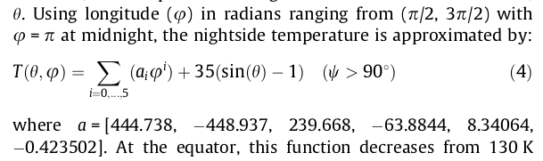
Backup Slides
The Lunar Exosphere Simulation Framework – Why Julia
function lunar_surface_temperatures_HURLEY2015(lng::Real, lat::Real)
if abs(lng) >= pi/2
a = [444.738, -448.937, 239.668, -63.8844, 8.34064, -0.423502]
if lng < 0; lng += 2pi; end
colat = -(lat - pi/2)
return sum([a[i] * lng^(i-1) for i in 1:6]) + 35 * (sin(colat)-1)
end
return 262*(cos(lng) * cos(lat))^(1/2) + 130
end
function lunar_surface_temperatures_HURLEY2015(lngs::AbstractVector, lats::AbstractVector; matrix=true)
return matrix ?
[lunar_surface_temperatures_HURLEY2015(lng, lat) for lng in lngs, lat in lats] :
[lunar_surface_temperatures_HURLEY2015(lngs[i], lats[i]) for i in eachindex(lngs)]
end
function lunar_surface_temperatures_HURLEY2015(xs::GlobalSphericalPosition)
return lunar_surface_temperatures_HURLEY2015(xs.theta, xs.phi)
end
function lunar_surface_temperatures_HURLEY2015(XS::Vector{GlobalSphericalPosition{T}}) where {T}
return lunar_surface_temperatures_HURLEY2015.(XS)
end
function lunar_surface_temperatures_HURLEY2015(grid::AbstractGrid)
return lunar_surface_temperatures_HURLEY2015.(surfacecoords(grid))
endModel Architecture
Nested-Loop Monte-Carlo Simulation
- \(\left(n_0\right)_k^{i,j}\): Surface number density of the \(i\)-th Monte-Carlo step, the \(j\)-th iteration, at the \(k\)-th grid element
- Updating of the surface number density: \(\left(n_0\right)_k^{i,j} \mathrel{{+}{=}} \frac{w}{Av_z}\)
- \(w\): current weight of the particle
- \(A\): area of the grid element at the current position
- \(v_z\): vertical velocity of the particle
- Updating the particle weight:
- rate losses: \(w\mapsto w\cdot \left(1 - \exp\left(-kt\right)\right)\)
- time-of-flight: \(t_f\), or
- residence time: \(\tau= \frac{h}{k_BT}\cdot\exp\left(\frac{E}{RT}\right)\)
- probability losses: \(w\mapsto w\cdot \left(1 - \sum p \right)\)
- escape or cold trapping: \(w\mapsto 0.0\)
- rate losses: \(w\mapsto w\cdot \left(1 - \exp\left(-kt\right)\right)\)
Model Architecture
Nested-Loop Monte-Carlo Simulation
Model Architecture
Nested-Loop Monte-Carlo Simulation
- intialization of particles at every grid element
- \(w_0\): initial weight at launch
- First iteration: solar wind as only source
- \(w_0 = 0\) on the lunar night-side
- \(w_0 = \dot s\cdot A \cdot \cos\psi\) on the day-side
- \(\dot s\) source rate of the solar wind (acts as a linear scaling factor of the entire simulation, usually \(\approx 2 \times 10^8\,\mathrm{s^{\mathrm{-1}}cm^{\mathrm{-1}}}\))
- Second+ iteration: source rate from conversions of previous iteration
- sum up all \(\left(n_0\right)_k^{i,j}\) from all \(k\) launches at all positions \(\,\Rightarrow\left(\boldsymbol{\mathbf{n_0}}\right)^{i,j}\)
Model Architecture
Nested-Loop Monte-Carlo Simulation
Model Architecture
Nested-Loop Monte-Carlo Simulation
- Loop II for each element \(\ce{H}\), \(\ce{H2}\), \(\ce{OH}\), and \(\ce{H2O}\)
- save all surface number densities \(\left(\boldsymbol{\mathbf{n_0}}\right)^{i,j}\)
- save all conversions
- perform multiple iterations until it converges
- sum of conversions is reducing each iteration
- usually 4-5 iterations are enough to reach \(1 \times 10^{-3}\) of the initial source rate
Model Architecture
Nested-Loop Monte-Carlo Simulation
Model Architecture
Nested-Loop Monte-Carlo Simulation
- pure Monte-Carlo loop
- save all steps
- postprocessing after the simulation
- if not enough steps are performed, the simulation can be re-run to add to the number of saved MC steps
Results
Losses
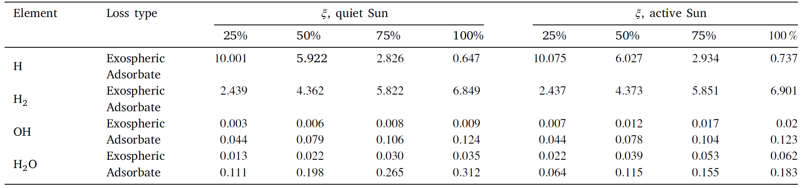
- \(\ce{H}\) is only lost in the exosphere
- higher \(\xi\) lead to fewer \(\ce{H}\) losses
- \(\ce{H2}\) is only lost in the exosphere
- higher \(\xi\) lead to increased \(\ce{H2}\) losses
- \(\ce{OH}\) is mainly lost as adsorbates on the lunar surface
- higher \(\xi\) lead to increased \(\ce{OH}\) losses
- the ratio between exospheric and adsorbate losses stays roughly constant at 1:10
- \(\ce{H2O}\) is mainly lost as adsorbates on the lunar surface
- higher \(\xi\) lead to increased \(\ce{H2O}\) losses
- the ratio between exospheric and adsorbate losses stays roughly constant at 1:10
Alexander Smolka | Technical University of Munich